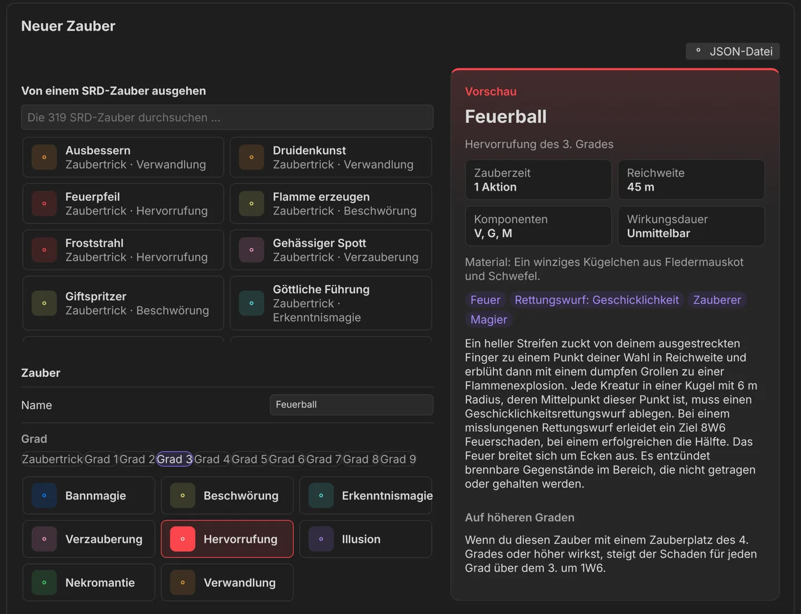
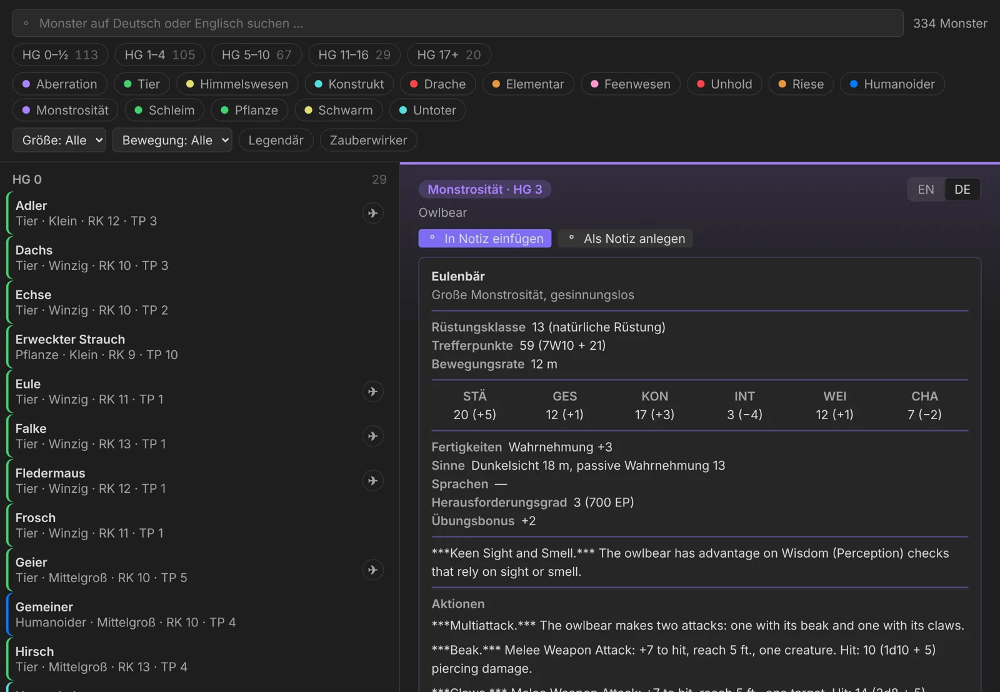
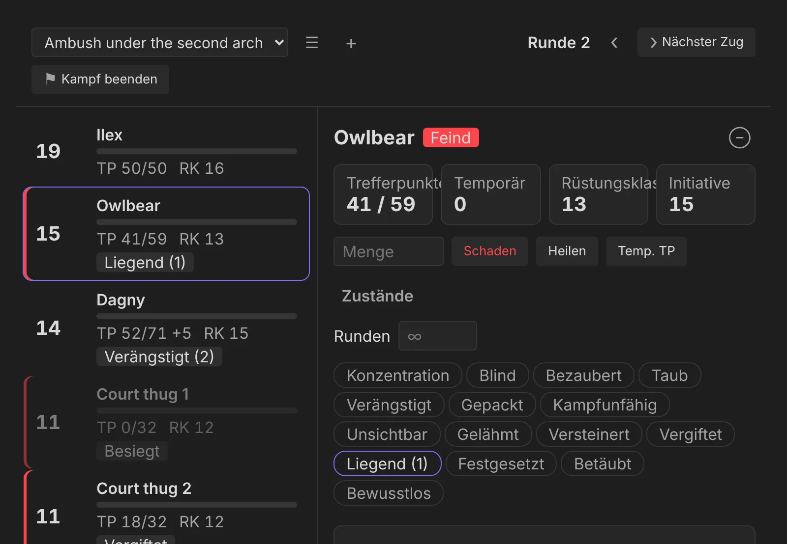
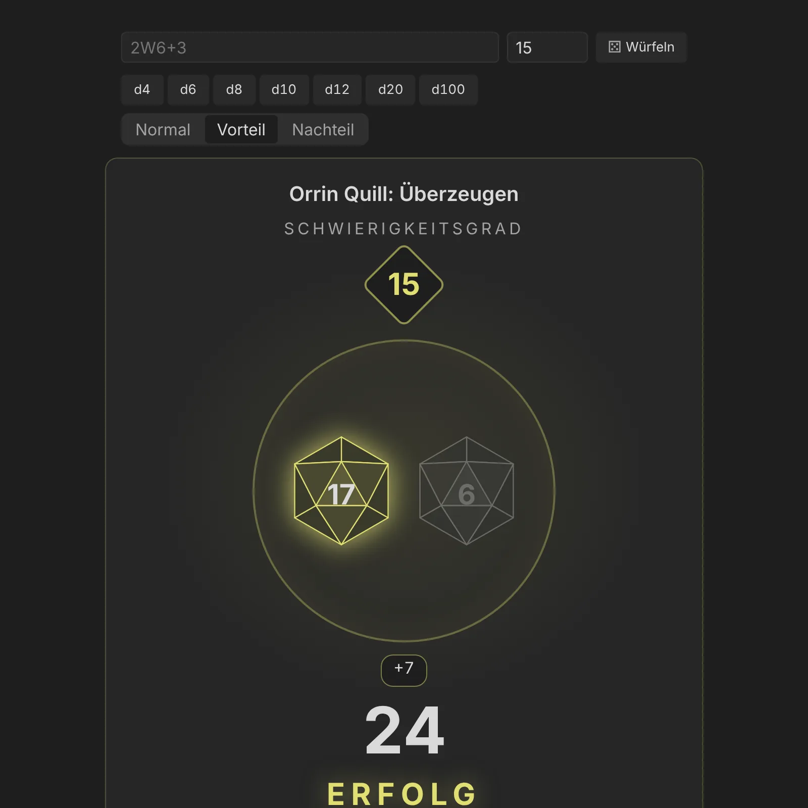

Obsidian plugins for the things I keep in my vault. Each one reads the notes you already
write, shows what is in them at a glance and lets you change them in place — no
accounts, no network, no format only the plugin understands.
Files first. Your notes are the truth; everything a plugin shows is
rebuilt from them.
Readable without it. Every convention is plain Markdown any editor shows
sensibly.
Edits, not rewrites. Changes are single-line edits — comments, quotes and
order stay.
Every theme. Obsidian’s own CSS variables only, dark first, at least
16 px text.
The plugins
One workshop, one plugin per folder.
Every plugin lives in this repository and shares its principles, its tooling and one
example vault. A plugin that is ready gets its own release repository for Obsidian’s
directory.
🐉
dnd5e-byLokianer
dnd5e-bylokianer
First release · 0.1.0
A game master’s thinking tool for D&D 5e: factions and how they stand towards
each other, NPCs with 5e stat blocks, a spellbook with your own spells, the Deck of
Many Things, a Monster Manual, a battle tracker and dice that roll like Baldur’s
Gate 3. It shows and suggests; the GM decides.
Your campaign already knows who hates whom. Now you see it.
Factions are folders, relations are numbers you type, NPCs carry their stat blocks — and
the plugin turns those plain Markdown notes into a living world you can read at a glance
and change in place.
Module 1 · Factions · accepted
Factions are folders. Relations are numbers.
A folder with a factions.md is a faction; the character notes inside are
its members; a faction folder inside another is a sub-faction. Each relation is a value
from −5 war to +5 sworn — one-directional, with an
optional reason.
type: faction
power: 3
relations: # the public face
Order of the Lantern: -4
The Archivists:
value: 1
why: "[[Mira Voss]]"
secret_relations: # the true stance, GM only
The Archivists: -2
Public and true. Secrets never show in anything marked public.
Inheritance. Members take their faction’s stance unless they state their own.
Never fatal. Broken values become warnings with a one-click Fix, not a blank
view.
A living map. Every faction in its own colour, on Obsidian’s canvas dots; hover
one and its stances light up with their values.
The Drowned Choir
Matrix
Matrix. Every value at a glance; inherited ones dashed.
The Gutter Court
Faction view. Drill into a faction: its members, who is out of line, where each
arrow points.
Popover
Edit in place. Click a cell or arrow; the write lands in the right note.
Tensions
Tensions. Who is out of line, what the public face hides.
Module 2 · NPC builder · accepted
Stat blocks where you need them.
A dnd5e-statblock block holds a 5e stat block in the YAML Fantasy
Statblocks users already know. The faction card puts AC, HP, CR, speed and the ability
modifiers right under the name; the full block waits, folded, where it stands in the
note — modifiers, XP and proficiency bonus worked out.
All 21 SRD 5.1 NPCs built in, checked against the SRD in tests.
Your own. Archetypes, races and dice tables as plain notes; values edited right
in the rendered block.
Linked spells. Spell names in a Spellcasting trait open the spellbook.
Compatible. One command converts Fantasy Statblocks blocks and back.
Mira Voss
Stat block
Module 2 · New NPC
Roll a whole person, keep what you like.
Pick a race, a class and an archetype from tiles — the SRD’s 9 races, 12 classes and 21
NPCs, plus your own as plain notes. Roll everything fills the rest; lock what you
want to keep and roll again. The preview card shows the NPC as it will be written, stat
block numbers included.
Your words win. Typing into a field locks it.
Bilingual dice. Every table has at least 50 entries, in English and German;
German distances in metres.
Into the stat block. A race writes its SRD traits — size, speed, darkvision,
languages, resistances.
Neuer NSC
Module 3 · Spellbook · accepted
Every SRD spell, one search away.
The 319 spells of the SRD 5.1 in their own tab: search in English or German, narrow
by level and school chips, class, casting time, damage, save, concentration and ritual.
Each spell wears its school’s colour; the card shows it in both languages.
German too. Every spell’s full text in German, distances in metres.
Keyboard first. ↑ ↓ through the list, Enter to read.
Your own spells.type: spell notes join the list — or let the
spell builder write one.
Offline. Everything ships with the plugin; no lookups on the web.
Zauberbuch
Spellbook · New spell
Start from any spell, make it yours.
The spell builder looks like New NPC: pick one of the 319 SRD spells from tiles and its
words arrive in your language, ready to change — or fill every field by hand, or load a
JSON file. The preview shows the card as the spellbook will.
School colours. Level and school as chips and tiles; the preview follows.
JSON in. Our own keys, or a spell in the 5e-bits or Open5e format.
A plain note out. Readable without the plugin, editable any time.
Neuer Zauber

Module 4 · Deck of Many Things · accepted
Declare, draw, and let the rules run.
The SRD’s Deck of Many Things on the table: name who draws, declare the cards, turn them
one by one. The Fool and the Jester leave the deck, The Void and Donjon end the drawing,
the Jester and the Idiot offer more draws — the tab keeps count.
A note keeps the deck. Ticked cards are out, every draw is a line.
22 or 13 cards. The full deck, or the one most parties find.
Your own decks. Typed in, copied from the standard deck, pasted or imported
from JSON — then drawn in the same tab.
German too. Wesir, Thron, Die Leere — every effect in German.
Deck der vielen Dinge
Module 5 · Monster Manual · accepted
334 monsters, one search away.
The SRD’s bestiary in a tab built like the spellbook: search in English or German,
narrow by challenge rating, type, size, movement, legendary and spellcaster. The card is
the full stat block, in the type’s colour, with the spells of a Spellcasting trait
linked.
Into your notes. Insert the stat block below your cursor, or make it a note.
German too. Names, sizes, types, metres — and every trait and action:
“Nahkampf-Waffenangriff: +7 auf Treffer”.
Your own. A monster builder like New NPC — start from any SRD monster, or
import from Fantasy Statblocks, 5etools or Open5e files.
One look. The same stat block view as in your notes.
Monsterhandbuch

Module 6 · Battle tracker · accepted
The fight lives in the encounter note.
An encounter note lists who fights — characters, notes, monsters from the Monster
Manual, with a count. The Battle tab rolls initiative (one roll per group), runs the
turns, tracks hit points, temporary hit points, death saves, conditions with their
rounds and concentration — and writes it all to a plain ## Combat table in
the note, so the fight survives a restart and reads fine without the plugin.
An encounter builder. Pick the party and monsters; the SRD 5.2.1’s XP
budget says Low, Moderate or High.
Logged, not narrated. Begin, defeated, down, dead and the end go to tonight’s
session; experience points only if you want them.
Mid-fight changes. Add to combat from the Monster Manual, or a name typed in.
Kampf

Module 7 · Dice · accepted
Every roll gets its moment.
A dice stage modelled on Baldur’s Gate 3’s checks, drawn by the plugin itself: the
difficulty class in its diamond, each die in its own shape tumbling and landing, the
bonuses flying in, the total counting up, then Success or Failure — a
natural 20 with golden rays. A click or Space skips straight to the result.
Formulas.2d6+3, 4d6kh3, d20+5 adv,
German 2W6+3.
In your notes.dice: 2d6+3 — Dice Roller’s syntax — and
dice: [[Rumours#Night (d20)]] for a table.
Rollable tables. A heading ending in a die makes the list or table below it
rollable; the row shows with its links.
Stat blocks and the party. Every +7 and
10 (1d10 + 5) is a button; characters roll their saves and skills.
Würfel

Dice in every stat block
Click the +7. Shift for advantage.
In your notes, the Monster Manual and the Battle tab, attack bonuses, damage and every
save and skill are buttons. A click plays the stage in a small window; Shift rolls with
advantage, Alt with disadvantage, a long press offers both on a phone. Saving throw DCs
stay text — the target rolls those.
After every change a notice offers Log, naming Session 14. One click writes a
line under ## Log of tonight’s session — secret changes inside a
[!gm] callout — and the views show each relation’s history in their
tooltips. Starting the next session carries the loot over, each item marked with where
it was found.
## Log
- 20:31 Order of the Lantern → The Gutter Court: −2 → −3
- 21:40 The party now knows [[Lady Vermillion]].
> [!gm]
> - 21:52 The Bench → Order of the Lantern: −4 → +4
## Loot
| Item | Who has it |
| --- | --- |
| Mira's calling card (from [[Session 14 – Bell Square]]) | Orrin |
Roadmap
Where dnd5e-byLokianer stands
Factionsdata model, card, world graph & matrix, faction view, tensions,
popover, session log — accepted in Obsidian
NPC builderstat blocks, New NPC with races, archetypes and dice tables,
editing in the block, live preview and locks — accepted in Obsidian
Spellbook319 SRD spells in English and German, filters, links from stat
blocks, own spells and a spell builder
Deck of Many Thingsthe SRD deck drawn by its rules, own decks with a
builder and import — accepted in Obsidian
Monster Manual334 SRD monsters in their own tab, own monsters, a monster
builder and import — accepted in Obsidian
Battle trackerinitiative, hit points and conditions, the fight kept in the
encounter note, logged to the session, an encounter builder — accepted in Obsidian
Dicea stage like Baldur’s Gate 3, dice: in notes,
rollable tables, rolls from stat blocks and the party — accepted in Obsidian
First release: 0.1.0 on 26 October 2026 — all seven modules, each checked inside
Obsidian before it counted. Download the ZIP from the
release on GitHub; it is not in Obsidian’s community directory yet.
Try it on Silverstadt
The repository ships an example campaign — a city of tides, bells and records with five
factions, secret stances, stat blocks, own spells and decks, and session notes. Build the
plugin into it and open the folder as a vault — or, for your own vault, unpack
the 0.1.0 ZIP
into .obsidian/plugins/ and enable it.
git clone https://github.com/lokianer/obsidian-plugins
cd obsidian-plugins
pnpm install
pnpm --filter dnd5e-bylokianer build
pnpm --filter dnd5e-bylokianer install-example
# open examples/vault in Obsidian, enable dnd5e-byLokianer
How the collection is built
Designed first, built in phases, checked in Obsidian.
Each plugin starts as a short design, then grows in phases with a plan and a review
stop. Pure logic sits in tested TypeScript, the Obsidian API behind thin adapters, the
views tested in a headless DOM. CI runs format, lint, strict typecheck, tests and build
on Linux, macOS and Windows for every push.
obsidian-plugins/
├── plugins/
│ └── dnd5e-bylokianer/ # one plugin per folder
├── packages/
│ └── session/ # shared, pure TypeScript
├── examples/vault/ # one test vault for all
├── docs/superpowers/ # designs and plans
└── site/ # this page